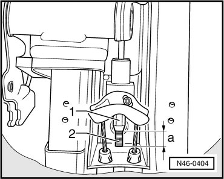
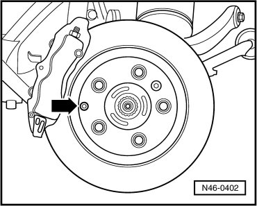
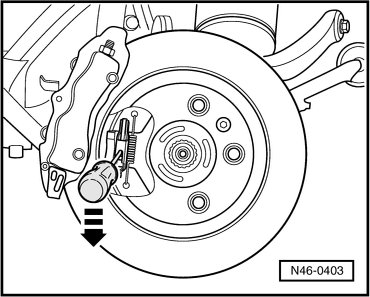

Rear Brake Cable
Rear Brake Cable
Removing
- Remove both rear wheels.
- Remove center console.
- Before loosening nut - 1 -, measure dimension - a -.
- Note measured value.

- Loosen nut - 1 - until brake cable can be disengaged from compensator bracket.
- Unclip cable sleeve from mount.
Brake Cable, Disengaging from Spreader
Only possible with released brake cable.
- Remove bolt - arrow - for adjustment nut of park brake.

- Push brake cable nipple against retaining spring in spreader downward until brake cable can be pulled out.

The right side is a mirror image, that means the brake cable nipple must be pushed upward.
- Unclip brake cable from retainer on tank.
- Remove brake cable from retainer on subframe and pull out.
Installing
- Installation is performed in the reverse sequence.
Brake cable nipple must noticeably engage in spreader.
- Engage brake cables in compensator bracket.
- Install nut - 1 - onto pull rod - 2 - until dimension - a - (measured before) removal is reached.
- Check free play at park brake pedal. Refer to --> [ Park Brake Pedal, Checking Play ] Procedures.